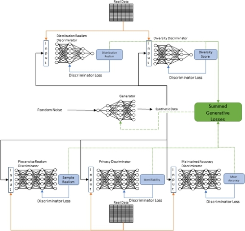
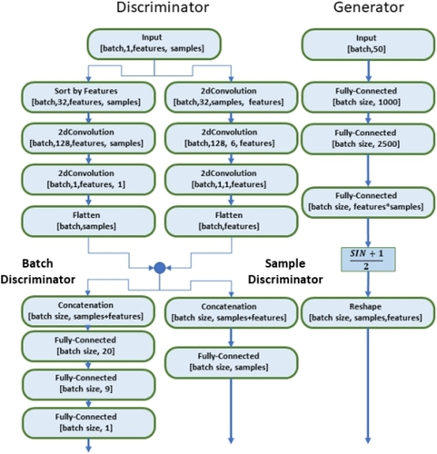
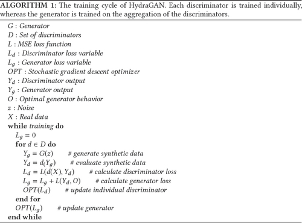
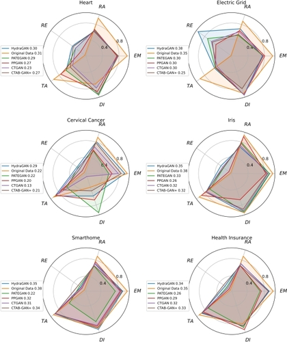
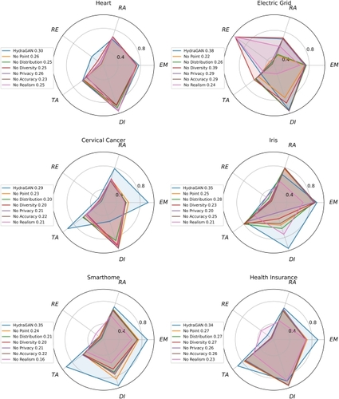

HydraGAN: A Cooperative Agent Model for Multi-Objective Data Generation
Abstract
Generative adversarial networks have become a de facto approach to generate synthetic data points that resemble their real counterparts. We tackle the situation where the realism of individual samples is not the sole criterion for synthetic data generation. Additional constraints such as privacy preservation, distribution realism, and diversity promotion may also be essential to optimize. To address this challenge, we introduce HydraGAN, a multi-agent network that performs multi-objective synthetic data generation. We theoretically verify that training the HydraGAN system, containing a single generator and an arbitrary number of discriminators, leads to a Nash equilibrium. Experimental results for six datasets indicate that HydraGAN consistently outperforms prior methods in maximizing the Area under the Radar Chart, balancing a combination of cooperative or competitive data generation goals.
1 Introduction
Machine learning models require a sufficient amount and diversity of training data to maximize robustness and minimize bias. A dearth of data can negatively impact predictive performance. Recognizing the surrogate role offered by synthetic data generators, researchers have created methods to generate increasingly realistic data proxies.
In some cases, emulating all characteristics of real data is not the sole, or even desired, criterion for data generators. For example, when the data contain sensitive attributes, there may exist dual (and dueling) goals of maintaining the data’s predictive power while preventing re-identification of sensitive information from the synthetic proxies. Balancing these conflicting desires may be characterized by a privacy-utility curve [26, 35, 45, 51], demonstrating that gains in realism are frequently accompanied by corresponding decreases in data privacy. Data scientists typically identify a point on the curve representing an acceptable tradeoff between these two forces and conjure application-specific means to minimize the ratio of utility loss to privacy gain [7, 27, 39, 42, 54, 58].
While privacy and realism are known to be contrasting goals, the relationships between other data constraints may be less obvious. A method is needed to generate data that optimizes multiple, possibly opposing, goals. In response to this need, we propose an algorithm that balances multiple data generation criteria. This algorithm is “multi-headed,” meaning it can optimize a combination of goals even when the relationship between them is not known a priori. Our algorithm, HydraGAN, is a multi-headed (multi-agent) generative adversarial network (GAN) that assigns a “head” (discriminator) to each data generation goal. HydraGAN’s generator is trained to create synthetic data that minimizes the aggregated loss across all discriminators in the system.
To validate HydraGAN, we compare the algorithm’s performance to baseline methods on several datasets from the domains of healthcare, finance, power distribution, and botany. Here, we focus on the following performance criteria: maximize realism for each individual synthetic data point, maximize distribution realism for a batch of synthetic data, meet externally imposed diversity constraints, minimize re-identification of sensitive features, and maximize the predictive accuracy of a model that is trained on real data. This work offers the following contributions:(1)We introduce a novel multi-agent GAN architecture.(2)We define new discriminator agents and loss functions to optimize a set of synthetic data generation goals.(3)We verify HydraGAN’s ability to achieve a Nash equilibrium.(4)We introduce novel methods and metrics to evaluate multi-criteria GANs.(5)We evaluate the multi-agent GAN on real and synthetic datasets, demonstrating the superior ability of HydraGAN to optimize a combination of data generation goals.
The structure of this article is organized as follows. Section 2 provides a review of recent breakthroughs in synthetic data generation and multi-agent GANs, highlighting the unique aspects of our proposed algorithm. Section 3 delves into the intricacies of the HydraGAN framework, detailing its multiple discriminators and their coordinated interaction with a single generator. HydraGAN utilizes a multi-agent design, enabling both cooperative and competitive dynamics among its components. In Section 4, we present a formal verification demonstrating that HydraGAN consistently achieves equilibrium, an essential characteristic for multi-agent GAN systems. Section 5 is devoted to assessing the efficacy of HydraGAN across various optimization metrics, employing six datasets for a comparative analysis against four established baseline methods. Finally, Section 6 offers insights derived from our findings and proposes potential avenues for future research in this field.
2 Related Work
2.1 Synthetic Data Generation
The popularity of synthetic data creation algorithms is evidenced by the diversity of their uses, including antenna and building design, gait analysis, and mediation of machine learning challenges such as class imbalance [5, 10, 17, 22, 24, 36, 43, 47, 50, 57, 59]. GANs are not only the method of choice but are being refined to produce increasingly more realistic data. One example, the stacked multi-channel autoencoder, combines synthetic and real data into multiple channels to better inform encoder training, improving data quality [61]. Similarly, SenseGen combines LSTM layers from the generator and the discriminator, allowing both networks to ‘remember’ the trajectory of real and candidate samples to boost outcomes [2]. HydraGAN complements these prior works by integrating diverse goals for the synthetic data.
2.2 Multi-Agent GANs
While GANs are traditionally designed as two-agent systems [8, 13, 19, 21, 25], recent work has expanded this idea to include multiple generator or discriminator networks. As an example, CycleGAN’s two discriminators and two generators aid in mapping images between domains. The first generator creates images for one domain, the second targets a new domain, and each is paired with a corresponding discriminator [63]. Similarly, in the image domain, Hardy et al. [28] introduced MD-GAN, which employs multiple discriminators within a federated learning environment. In MD-GAN, a single generator learns from distributed systems, each analyzing a subset of the data. Intrator et al. [32] introduced yet another multi-discriminator GAN, called MDGAN, that combines efforts from two discriminators to boost the realism of generated samples.
While these ideas enhance the ability of GANs to generate realistic data, little effort has focused on generating data with competing objectives. This gap is filled by HydraGAN, which trains a generator to accommodate a mix of objectives. Unlike MDGAN which freezes discriminators while training others, the HydraGAN generator does not adjust its weights until it has accumulated the total loss from all discriminators, converging to an equilibrium between all of the discriminators’ objectives.
2.3 Addressing GAN Vulnerabilities
With the proliferation of synthetic data generation techniques, the benefits of synthetic data have been accompanied by unforeseen challenges. In particular, researchers found that real data used to create synthetic proxies may be vulnerable to subsequent exploitation from adversarial actors [9, 52]. In particular, models trained on synthetic data may be vulnerable to membership inference attacks. In this scenario, an adversary infers which real data were used to train the model and thereby extracts sensitive, private information from included and excluded real data [30]. In response, privacy-preserving data mining strategies ensure that the use of synthetic data does not cause intended or unintended harm [1, 18]. These strategies range from adding noise [12, 15, 31, 33, 38] to suppressing data within sensitive records [55].
HydraGAN addresses issues of data privacy through the inclusion of a re-identification discriminator that attempts to identify sensitive information from the generated sample. As a result, the generator will produce synthetic data that are less easily identifiable by this discriminator, reducing the ability of a malicious entity to collect information on vulnerable data samples.
Additionally, GANs traditionally suffer from not representing the entire distribution of real data [3]. Such mode collapse typically results from the network generating repetitive samples that represent only a subset of the real data instead of retaining the characteristics of the entire real dataset.
HydraGAN moves away from these previous approaches. Because HydraGAN generates a batch of samples at a time, the algorithm can evaluate entire batches for objectives that include distribution realism and diversity. The distribution realism helps HydraGAN avoid mode collapse, whereas the diversity discriminator allows HydraGAN to be resilient in the presence of an input dataset that undersamples population subsets. The further inclusion of a privacy discriminator supports privacy preservation from synthetic data. Uniquely, the combination of these multiple discriminator agents ensures that each of these goals influences the type of data generated by the system.
3 HydraGAN Design
HydraGAN is designed as a multi-agent GAN, consisting of one generator and an arbitrary number of discriminators. The discriminator structures are designed to either process one generated sample at a time or an entire batch of generated data. HydraGAN’s architecture is illustrated in Figure 1. As shown in the figure, each of HydraGAN’s discriminators separately critiques a batch of generated samples, providing feedback based on their separate objectives. The two alternative discriminator final layers allow the network to output one value per generated sample or one value for an entire data batch, to accommodate the needs of the discriminator objective and loss function.1 Here, we describe the structure and function of HydraGAN’s generator and the set of discriminators that are included and evaluated in the current HydraGAN design.

3.1 HydraGAN Generator
HydraGAN’s generator creates data that balance the multiple objectives represented by the individual discriminators. Shown in Figure 2, the generator structure contains three fully connected layers with two activation functions. HydraGAN’s generator differs from that found in other GANs. HydraGAN generates a batch of data at a time (see Figure 2). HydraGAN’s multi-sample output allows the discriminators to assess the batch data distribution as well as individual data samples. This allows HydraGAN to fulfill objectives such as data diversity and emulation of the original data distribution, sidestepping the trap of mode collapse.

Algorithm 1 provides a summary of HydraGAN’s training process. To aid in the discussion, Table 1 summarizes notations used throughout this and the following sections.
| Component | Description | First Appearance (Section #) |
|---|---|---|
| G | Generator | 3.1 |
| x_(r) | Batch of real data | 3.2.1 |
| x_(g) | Batch of generated synthetic data | 3.2.1 |
| D_(ρ) | Point discriminator | 3.2.1 |
| D_(τ) | Distribution discriminator | 3.2.2 |
| z | Random noise | 3.2.2 |
| D_(ψ) | Diversity discriminator | 3.2.2 |
| D_(ω) | Privacy discriminator | 3.2.4 |
| D_(γ) | Accuracy discriminator | 3.2.5 |
| f | Feature of real data | 3.2.3 |
| α | Feature value proportions within real data | 3.2.3 |
| β | Desired feature value proportions | 3.2.3 |
| s | Sensitive feature | 3.2.4 |
| c | Target feature for supervised learner | 3.2.5 |
| θ | Generator network weights | 4 |
| y | Optimization objective | 4 |
| Q | Optimization function | 4 |
| F(X,θ) | Generator output based on weights θ and input X | 4 |
| ▽ | Gradient derived from loss function | 4 |
| ϕ | Loss function | 4 |
| bar(y) | Mean of all objectives | 4 |
| hat(y_(i)) | Residual of objective y_(i) from mean of objectives | 4 |
| ϵ | Small positive weight update | 4 |
| L_(data) | Total number of samples in a training dataset | 2 |

3.2 HydraGAN Discriminators
HydraGAN’s single generator is pitted adversarially against any number of discriminators. Because HydraGAN’s objectives apply to either individual points or a collection (batch) of points, the discriminators employ two alternative structures. In some cases, discriminators examine an entire batch of data and output a value that reflects the quality of that batch. In other cases, discriminators output a separate value for each sample within the data batch.
The two discriminator structures are shown in Figure 2. Input to both types of discriminators is identical and passes through two parallel series of convolutions. The first of these convolutions analyzes intra-batch characteristics by moving a convolutional window across each of the samples. The second sorts the data values for each feature and passes the sorted vector through a series of convolutional windows to extract a single value for each feature. This sorting step allows the network to focus on a specific range and distribution of values across each of the features. The result ensures that the distribution characteristics of the real data may be retained.
Once both sample and feature statistics are extracted, the two types of discriminators further vary in structure and function. Batch discriminators learn over an aggregate of samples, distilling the analysis to a single value. This uniquely allows discriminators to evaluate a collection of samples to measure aggregate realism or the diversity of the generated dataset. In contrast, sample-type discriminators generate a score for each data point within the batch. This strategy is employed by the traditional discriminator that determines the realism of a sample. It is also used by discriminators that grade each sample for its re-identifiability and target predictability. HydraGAN therefore produces a batch of samples that can then be examined for individual quality or for how they appear as a group.
HydraGAN currently generates data under the guidance of five discriminators. Some discriminators are selected to emulate properties found in other GANs. We then add discriminators to exhibit characteristics that are unique to this work. First, each data point must be indistinguishable from a real data point (point discriminator). Second, the distribution characteristics of an entire batch must emulate the real data distribution (distribution discriminator). We additionally include privacy preservation (privacy discriminator), target class predictability (accuracy discriminator), and data diversity (diversity discriminator) constraints. However, the number of discriminators that can be fused in HydraGAN is arbitrary and may be modified to meet the needs of each data generation task.
3.2.1 Point Discriminator.
The goal of a traditional GAN is to generate data points that individually cannot be discriminated from real data points. In keeping with this goal, HydraGAN uses a point discriminator to ensure that each sample within a generated batch is realistic. The point discriminator instantiates the sample network structure to perform binary classification, labeling each sample as real or synthetic.
The point discriminator, , optimizes the function shown in Equation (1). Here, and represent batches of real and corresponding synthetic data points.2
As Equation (1) indicates, the discriminator learns to categorize data points as ‘real’ or ‘synthetic.’ Optimal performance is reached when every point is correctly labeled.
3.2.2 Distribution Discriminator.
The distribution discriminator, , examines a batch of data to determine whether the set is real or synthetic based on the data distribution characteristics. The point discriminator may be effective at generating individual realistic data points. However, if realism is only optimized for one sample at a time, the GAN may fall prey to mode collapse and not emulate the distribution of points found in the real data. The function approximated by this discriminator is defined in Equation (2).
When training this discriminator, noise z is added to the generated and real data before they are passed to the network. This noise is uniformly sampled from . Adding noise supports network convergence once the generated data fall within the noise margin of the real data.
3.2.3 Diversity Discriminator.
Bias and fairness are recognized as significant problems in machine learning [44, 60]. Because representation bias may occur when training data lack diversity [40], researchers generate synthetic data to improve and control the data characteristics, ensuring that they are representative of the population they intend to mimic [11]. This capability is supported in HydraGAN by the diversity discriminator, . This discriminator ensures that output from the generator meets externally imposed constraints on the distribution of a selected feature. Constraints may be designed to ensure equal representation among all of the target class values or more greatly emphasize value ranges for a specific feature, providing the ability to achieve the data distribution needed for a given task. As an example, if 90% of a physical data collection represents one value for a sensitive feature (e.g., Race) and 10% represents another, the diversity discriminator may be used to achieve a more uniform distribution. In this example, the diversity discriminator minimizes the difference between the original entropy (in this case, 0.47) and the specified desired entropy (e.g., a uniform distribution with an entropy of 1.00).
Tailoring a set of features to exhibit needed characteristics is accomplished by training the diversity discriminator to emulate a specified information content, measured by the entropy of a given feature. The discriminator’s deviation from this goal is computed as the absolute value of the difference between the observed and desired entropy. HydraGAN’s current diversity goal is to output uniform sampling of the features; thus, the discriminator approximates the function shown in Equation (3). In this equation, represents the proportion for each value of feature f in the original (real) dataset and represents the desired proportion.
3.2.4 Privacy Discriminator.
To promote the privacy preservation of synthetic data, the privacy discriminator assesses its ability to re-identify sensitive attributes from the generated data. The discriminator simulates an attack on the data from an external entity wishing to identify a sensitive attribute from the generated data. The discriminator’s goal is to make attribute re-identification as difficult as possible. To accomplish this goal, the privacy discriminator trains a model to re-identify sensitive attributes in the data given values of the other features.
The privacy discriminator optimizes a function mapping the non-sensitive features of a data sample to the sensitive value contained in that sample. Because the discriminator predicts these values for a set of generated data, it uses the batch discriminator design shown in Figure 2. While examining each data point to infer the sensitive value, the discriminator observes all other non-sensitive attributes in the generated batch. As a result, the discriminator can access distribution information, such as the relative frequency of sensitive values, when generating a prediction. Equation (4) formalizes the discriminator’s objective, where represents the privacy discriminator, k represents a data sample drawn from the real data, and s represents the sensitive feature of sample k.
To optimize the function in Equation (4), the privacy discriminator must perfectly re-identify the sensitive attribute value for each generated data point. The adversarial relationship between discriminators and generator thus forces the generator to create data that makes re-identification difficult for the discriminator, improving privacy preservation through the synthetic data generation.
3.2.5 Accuracy Discriminator.
HydraGAN’s discriminators guide data generation to achieve their own (greedy) goals, which may, in turn, jeopardize the predictive accuracy of a model that is trained on real data. The accuracy discriminator therefore ensures that the predictability of a target feature is maintained. In this respect, the accuracy discriminator plays a similar role to the privacy discriminator by attempting to predict the value of a specific feature. The impact of this discriminator on HydraGAN’s generator is to learn the relationship between features that influence predictive accuracy and ensure that those characteristics are preserved. These relationships are maintained as the generator learns to minimize the discriminator’s loss. This optimization goal is formalized in Equation (5). Here, represents the accuracy discriminator, k represents a data sample drawn from the real data, and c represents the target feature in k that is being predicted.
While HydraGAN currently contains five discriminators, more can be added as additional generation goals are introduced.
4 System Convergence
HydraGAN optimizes multiple objectives using a set of distinct discriminators. This organization sets up a cooperative/competitive relationship between the system components. An ideal multi-agent system will converge at an equilibrium. This can be tricky, as the interplay between multiple agents is a known confounding factor [6]. In fact, the complexity of calculating an equilibrium between multiple agents has been shown to increase exponentially with the number of agents [48].
Here, we examine whether HydraGAN reaches a system equilibrium. We hypothesize that by summing the multiple component gradients, the system will reach an equilibrium that balances the multiple objectives. Our proof builds on the convergence argument of Kuan and Hornik [37] for multiple objective functions.
Consider a set of training samples and corresponding objectives, , each of which individually converges when training a network with weights, . Convergence is achieved when the generated output approaches the target value, as expressed in Equation (6).
The collection of optimization functions, Q, corresponds to input samples X and a set of associated objectives , as described in the literature [37]:
As training proceeds, the trajectory of each is defined by the corresponding gradient updates, calculated through the respective loss functions, . In HydraGAN, the gradients of each training sequence are summed before a step is taken, yielding a total update to of
Rewriting and replacing the losses from Equation (8) with mean squared error (MSE), and representing the generator’s output as F when given input X with weights yields
Equation (9) is equivalently expressed as
Next, we introduce the mean and residual of all y values as and , respectively. Based on these terms, Equation (10) is re-expressed as
Expanding and rearranging the terms in Equation (11) results in
We separate the summed and non-summed terms, yielding
As the sum of all residuals in a set (in this case, the terms) is equal to 0, these are removed:
Equation (14) is now composed of two terms, the sum of the squared residuals and the loss of as a function of the squared error between its output and . As network training proceeds, the weights of will approach the mean of all of the objectives y, balancing the set of objectives.
We hypothesize that when the system converges, a Nash equilibrium is formed between the discriminator goals. This hypothesis may be proven by contradiction. Assume that the weights in may move some arbitrary positive distance from an equilibrium state without negatively impacting the loss function. Thus, the inclusion of cannot result in a higher model loss, and the unmodified loss (LHS) is at least equal to the value from the modified loss function (RHS), as seen in Equation (15).
The inequality in Equation (15) characterizes the assumption that there is a move the network can make away from the equilibrium point that will yield a lower overall loss. We now remove common terms from the equation, yielding:
We then substitute into the equation:
The inequality in Equation (17) cannot be met because s, the difference between the sum of squared residuals, is negative, whereas , the positive movement away from the equilibrium point between discriminators, is positive. The supposition that an improvement exists for the converged value that will result in a lower overall loss is therefore false. The loss of the generator’s weights, represented by , is thus in a Nash equilibrium with respect to the multiple discriminator inputs , as a change to one or more weights will move the system away from its optimal state. This conclusion supports HydraGAN’s design to balance a competing set of objectives, because the system will be able to reach a stable point in the loss landscape that balances all of the objectives.
5 Experimental Validation
We validate HydraGAN’s ability to optimize a combination of data generation goals. Traditional evaluation approaches alone are not sufficient here, because they often rely on customized heuristics or human inspection of generated samples [53]. For HydraGAN, evaluation is further complicated by the need to achieve multiple objectives represented by the multiple discriminators. In our evaluation, we employ some traditional metrics. Additionally, we introduce novel metrics to evaluate each objective. These metrics assess optimization criteria that are not commonly found in GANs and reflect use cases for such a multi-agent approach. To provide baselines for comparison with HydraGAN, we select four multi-agent GAN algorithms: PPGAN, PATE-GAN, CTGAN, and CTAB-GAN+ [34, 41, 56, 62].
The training parameters used in these experiments are summarized in Table 2. For these experiments, the target diversity distribution for the sensitive parameter is a uniform distribution. In the case of the baseline methods, the hyperparameters are those suggested by the authors. The hyperparameters of batch number, batch size, and number of epochs were the same during training and testing. The learning rate parameters were decreased from 0.00010 to 0.00005 to promote consistent training, improving the convergence of HydraGAN. A low learning rate was selected to accommodate the large number of networks. Note that the discrepancy between the comparatively low number of batches for HydraGAN versus the other methods is due to the unique way HydraGAN processes data. Because some of HydraGAN’s discriminators evaluate an entire batch of data, HydraGAN did not process a single batch of 64 samples (with 64 corresponding loss calculations and updates per iteration), but rather processed four batches of 50 samples (with four corresponding loss calculations and one update per iteration). All experiments were run on 10 CPU cores of NVIDIA Tesla K80s, each with 256 GB of memory.
| Algorithm | Learning Rate | Number of Batches | Batch Size | Epochs |
|---|---|---|---|---|
| HydraGAN | 0.00005 | 4 | 50 | 30,000 |
| PPGAN | 0.0002 | 64 | 1 | 30,000 |
| PATE-GAN | 0.0001 | 64 | 1 | 30,000 |
| CTGAN | 0.0002 | 500 | 1 | (300∗L_(data))/(500) |
| CTAB-GAN+ | 0.0002 | 500 | 1 | (150∗L_(data))/(500) |
5.1 Baseline Methods
HydraGAN is evaluated in comparison with four recent approaches to multi-objective synthetic data generation. The first baseline, PPGAN [41], offers privacy guarantees by injecting noise into the discriminator’s loss gradients as it learns to differentiate between real and synthetic data. This training strategy introduces uncertainty within the discriminator’s ability to learn a specific sample in the real data. This uncertainty is calculated as a differential privacy bound, pushing PPGAN to preserve privacy while generating realistic synthetic data [41].
The second baseline, PATE-GAN, also employs differential privacy guarantees for the generated synthetic data [34]. Unlike PPGAN, PATE-GAN extends the federated learning model from work such as MD-GAN [28], where discriminators train on disjoint portions of the real data. This method additionally extends the discriminators to act as differentially private student-teacher ensembles, adding privacy guarantees to the generated data.
The third baseline is CTGAN [56], an algorithm that adopts a multi-agent approach to generating mixed-type, tabular data. CTGAN samples each data column separately to handle a mix of continuous and discrete variables, then integrates a conditional generator to learn the real data conditional distribution.
The fourth baseline is CTAB-GAN+ [62]. CTAB-GAN+ shares privacy-preservation and mixed-type goals with the other baselines. CTAB-GAN+ adds downstream losses and a Wasserstein loss to improve training convergence and data realism while maintaining data privacy.
5.2 Datasets
HydraGAN and the baseline methods are evaluated on six datasets. Dataset size and dimensionality are summarized in Table 3 together with the features that are examined for enhancement of privacy preservation, predictive accuracy, and sample diversity. The heart [23], cervical cancer [34], and iris [20] datasets were included because of their prior use in privacy-preservation evaluation [18]. Additionally, we include power consumption [4], health insurance [29], and smart home behavior-based health assessment [14] datasets. These datasets vary in their application domain, but each contains a sensitive feature which, if divulged, will lead to person or household re-identification. For example, age is selected as a sensitive attribute for the health datasets because of its known vulnerability to a re-identification attack [46].
| Name | Features/ Samples | Sensitive Feature | Accuracy-Preserving (Target) Feature | Diversity Feature |
|---|---|---|---|---|
| UCI Heart | 14/ 304 | Age | Sex | Heart Diagnosis |
| CASAS SmartHome | 58/ 547 | Age | Race | Testing Group |
| Power Grid | 11/ 999 | Power Used | User Reaction | Power Stability |
| Cervical Cancer | 34/ 669 | Age | Number of Children | Cancer Status |
| Health Insurance | 40/ 1,042 | Age | Income | Billed Amount |
| Iris | 5/ 151 | Petal Length | Petal Width | Species |
5.3 Metrics
The quality of generated data is evaluated using five metrics. Each metric relates to one of HydraGAN’s objectives as described in Section 3.2.1. To measure the realism of each data point (corresponding to the point discriminator), we employ the retained accuracy metric introduced by Jordan et al. [34]. This is accomplished through the creation of an ensemble of machine learning models that will train on the generated synthetic data and then be evaluated for their performance on the real data. To perform this task, an ensemble of diverse classification models (e.g., random forest, support vector regression, and K-nearest regression) is trained to predict the value of each data feature (other than features reserved for privacy preservation, target accuracy, and diversity) given the other features of a sample. The ensemble is trained on synthetic data and tested on real data. Accuracy is reported as the average over the set of features and classifiers.
To evaluate the quality of the synthetic data distribution, we calculate the Earth Mover’s (EM) distance between real data and synthetic data. The EM distance has been used in prior work to quantify the similarity between domains based on their representative data [16], as shown in Equation (18)).
Next, the diversity of a specified feature is calculated using Shannon’s entropy, as shown in Equation (19) and applied to the selected feature. This metric follows approaches reported by Qian et al. [49].
To evaluate the privacy preservation of the synthetic data, we utilize classification error, where the target attribute is the sensitive attribute. Once again, an ensemble of classification methods is employed for this task, composed of the same model architectures used in calculating retained accuracy. Re-identification error is reported as the inverse of the classification error for the sensitive attribute. Finally, this same ensemble predicts the value of a specified target attribute, and we report the predictive performance as target accuracy.
5.4 Performance Visualization
In addition to summarizing the quantitative results of HydraGAN and baseline methods, we provide a performance visualization. For this, we introduce a radar chart to evaluate the set of metrics. Each spoke of the radar chart represents one of the performance metrics, and the goal of HydraGAN is to maximize the combined value along the spokes, thus maximizing the Area under the Radar Chart (AuRC). Corresponding to the metrics we defined, in this article the radar chart spokes represent retained accuracy (RA), EM distance (EM), diversity (DI), re-identification error (RE), and target accuracy (TA). Each metric is normalized to the range . Table 4 also includes the mean distance and the MSE.
| Dataset | Method | EM | RA | RE | TA | DI | MD | MSE | AuRC |
|---|---|---|---|---|---|---|---|---|---|
| UCI | Original | 1.00 | 0.96 | 0.03 | 0.97 | 0.71 | 0.26 | 0.20 | 0.31 |
| Heart | PPGAN | 0.75 | 0.67 | 0.16 | 0.75 | 0.91 | 0.35 | 0.19 | 0.27 |
| PATE-GAN | 0.77 | 0.65 | 0.31 | 0.60 | 0.99 | 0.33 | 0.16 | 0.29 | |
| CTGAN | 0.77 | 0.64 | 0.31 | 0.40 | 0.81 | 0.41 | 0.21 | 0.23 | |
| CTAB-GAN+ | 0.78 | 0.63 | 0.38 | 0.47 | 0.96 | 0.36 | 0.17 | 0.27 | |
| HydraGAN | 0.77 | 0.63 | 0.40 | 0.60 | 0.99 | 0.32 | 0.14 | 0.30 | |
| Smart | Original | 1.00 | 0.89 | 0.10 | 0.97 | 0.93 | 0.22 | 0.17 | 0.37 |
| Home | PPGAN | 0.85 | 0.76 | 0.19 | 0.93 | 0.90 | 0.28 | 0.15 | 0.32 |
| PATE-GAN | 0.73 | 0.65 | 0.23 | 0.56 | 0.79 | 0.41 | 0.21 | 0.22 | |
| CTGAN | 0.83 | 0.70 | 0.21 | 0.84 | 0.87 | 0.31 | 0.1 | 0.30 | |
| CTAB-GAN+ | 0.88 | 0.68 | 0.27 | 0.91 | 0.94 | 0.27 | 0.13 | 0.34 | |
| HydraGAN | 0.90 | 0.73 | 0.22 | 0.93 | 0.97 | 0.25 | 0.14 | 0.35 | |
| Electric | Original | 1.00 | 0.89 | 0.12 | 0.94 | 0.95 | 0.24 | 0.20 | 0.35 |
| Grid | PPGAN | 0.80 | 0.65 | 0.46 | 0.48 | 0.99 | 0.32 | 0.17 | 0.30 |
| PATE-GAN | 0.77 | 0.53 | 0.72 | 0.48 | 1.00 | 0.30 | 0.16 | 0.30 | |
| CTGAN | 0.76 | 0.62 | 0.60 | 0.43 | 1.00 | 0.32 | 0.17 | 0.30 | |
| CTAB-GAN+ | 0.78 | 0.55 | 0.57 | 0.47 | 0.83 | 0.36 | 0.19 | 0.25 | |
| HydraGAN | 0.75 | 0.69 | 1.00 | 0.51 | 0.98 | 0.21 | 0.09 | 0.38 | |
| Cervical | Original | 1.00 | 0.92 | 0.06 | 0.97 | 0.36 | 0.34 | 0.26 | 0.29 |
| Cancer | PPGAN | 0.63 | 0.59 | 0.12 | 0.89 | 0.67 | 0.42 | 0.24 | 0.20 |
| PATE-GAN | 0.55 | 0.58 | 0.25 | 0.58 | 1.00 | 0.41 | 0.22 | 0.22 | |
| CTGAN | 0.78 | 0.68 | 0.23 | 0.85 | 0.08 | 0.47 | 0.32 | 0.13 | |
| CTAB-GAN+ | 0.85 | 0.78 | 0.19 | 0.68 | 0.44 | 0.41 | 0.23 | 0.21 | |
| HydraGAN | 0.94 | 0.81 | 0.27 | 0.92 | 0.52 | 0.30 | 0.15 | 0.29 | |
| Health | Original | 1.00 | 0.89 | 0.10 | 0.98 | 0.85 | 0.24 | 0.17 | 0.35 |
| Insurance | PPGAN | 0.73 | 0.67 | 0.14 | 0.86 | 0.98 | 0.34 | 0.19 | 0.29 |
| PateGAN | 0.70 | 0.67 | 0.20 | 0.72 | 0.93 | 0.36 | 0.18 | 0.26 | |
| CTGAN | 0.89 | 0.72 | 0.17 | 0.90 | 0.89 | 0.29 | 0.16 | 0.32 | |
| CTAB-GAN+ | 0.89 | 0.67 | 0.29 | 0.89 | 0.89 | 0.27 | 0.13 | 0.33 | |
| HydraGAN | 0.91 | 0.71 | 0.25 | 0.91 | 0.89 | 0.27 | 0.13 | 0.34 | |
| Iris | Original | 1.00 | 0.97 | 0.02 | 0.97 | 1.00 | 0.21 | 0.19 | 0.38 |
| PPGAN | 0.83 | 0.94 | 0.08 | 0.90 | 0.67 | 0.32 | 0.20 | 0.26 | |
| PATE-GAN | 0.92 | 0.79 | 0.24 | 0.65 | 0.97 | 0.29 | 0.15 | 0.33 | |
| CTGAN | 0.88 | 0.71 | 0.27 | 0.74 | 0.94 | 0.29 | 0.14 | 0.32 | |
| CTAB-GAN+ | 0.86 | 0.77 | 0.24 | 0.79 | 0.91 | 0.29 | 0.14 | 0.32 | |
| HydraGAN | 0.92 | 0.67 | 0.32 | 0.77 | 1.00 | 0.26 | 0.12 | 0.35 |
We postulate that this method of visualization presents a novel, approachable way of evaluating multi-objective synthetic data. The use of a radar chart, quantified with a unifying metric of AuRC, allows the multiple data characteristics to be quantified alongside a summary that provides an at-a-glance encapsulation of all targeted metrics.
5.5 Results
In these experiments, our objective is to evaluate HydraGAN’s capability in achieving a variety of specific data generation objectives. We anticipate that several of the assessed methodologies will demonstrate proficiency in one or more of the target metrics that represent these different goals. Although we anticipate that HydraGAN will exhibit robust performance for each of the metrics, our overarching hypothesis is that it will outperform all baseline methods in optimizing a collective set of criteria, as evidenced by its superior performance for the AuRC metric.
Figure 3 plots the performance of the data generated by the three tested models on the six datasets, and Table 4 summarizes numeric results for the specific and combined performance metrics. As the table and figure show, HydraGAN consistently outperforms the baseline methods at optimizing a combination of objectives. This is indicated by yielding higher AuRC values than all baseline data generation methods for all six datasets. Similarly, HydraGAN yields the best mean distance for all datasets and best MSE for five of the datasets. In the case of the smart home data, CTAB-GAN+ slightly outperforms HydraGAN in terms of MSE.

Because of its unique design, HydraGAN adapts to a combination of data generation goals better than the baseline methods. As a result, it does not rank as the top performer for some of the individual objectives. In particular, PPGAN outperforms HydraGAN in terms of retained accuracy for three of the six datasets. CTAB-GAN+ outperforms HydraGAN in terms of re-identification error for two of the datasets, and PPGAN outperforms HydraGAN in terms of target accuracy for two of the datasets. Additionally, CTAB-GAN+ and PPGAN outperform HydraGAN for one dataset each.
The re-identification scores of the six generated datasets illustrate the potential of multiple GAN strategies for actively ensuring privacy during data generation. Interestingly, HydraGAN outperforms PPGAN in terms of re-identification accuracy for all six datasets. The performance improvement is observed despite the fact that PPGAN is specifically designed as a method to offer privacy guarantees. HydraGAN also outperforms PateGAN, another privacy-preserving method, in terms of re-identification error for all datasets. CTAB-GAN+ focuses on data realism as well as data privacy. In our experiments, CTAB-GAN+ is the best-performing algorithm for privacy preservation of smart home and health insurance data but does not perform as well as HydraGAN for the other four datasets.
5.6 Ablation Analysis
In the previous section, we observed that HydraGAN outperformed baseline methods when balancing five diverse data objectives. Here, we investigate the impact of removing individual discriminators on HydraGAN performance. We hypothesize that the removal of a single discriminator will lessen HydraGAN’s performance on the corresponding objective. We analyze the impact of this removal on the remaining objectives and AuRC performance.
The results of the ablation study are visualized in Figure 4. As expected, when a discriminator was removed from the system, performance for the corresponding objective decreased. However, because HydraGAN balances multiple objectives, performance for the remaining objectives correspondingly increased. Consistently, HydraGAN with all discriminators achieves the highest AuRC value of all variations.

These results support the hypothesis that HydraGAN can effectively combine input from all agents to optimize diverse objectives. Additionally, the results indicate the desired relationship between the discriminator goals and the measures that are used to assess performance for that goal. The shape of the performance curve shifts with these changes in the discriminator space. Removal of a discriminator forces a collapse in performance for the corresponding metric. However, results from this analysis also highlight the cooperative and competitive discriminator “teams.” Three cooperative discriminator groups emerged: those that emphasize data realism (i.e., point and distribution realism, target accuracy), those that emphasize privacy preservation (i.e., privacy), and those that optimize externally imposed distribution constraints (i.e., diversity). Removing any or all of the realism agents allows the privacy performance to improve as well as data diversity, confirming the intuition that removing the need to generate realistic data makes it easier to obscure sensitive attributes and achieve diversity goals.
6 Discussion and Conclusion
In this article, we introduced HydraGAN, a multi-agent GAN architecture. For real and synthetic datasets, we observed that HydraGAN successfully satisfies multiple objectives, outperforming baseline methods. We noted that while the objectives we currently define are valuable for synthetic data, further analysis is needed to determine how well the multi-agent approach will handle irreconcilable objectives. If a large number of similar discriminators are incorporated, the resulting data may be skewed toward a vague general objective rather than an intersection of more specific criteria.
A limitation of this work is the lack of in-depth analysis of the types of objectives that can be introduced and their impact on each other. Interaction between multiple cooperative agents will be different from that of competing agents, but neither may yield the best possible results. Future work may consider methods of refining multiple objectives to yield the best overall performance. An analysis of how overlap between objective functions affects training will also be valuable.
We note in the experimental results that HydraGAN outperforms other privacy-preserving GANs. However, some of these prior methods offer differential privacy guarantees. Such guarantees become complex when other objectives are introduced, and this can be considered in extensions of HydraGAN.
The current design of HydraGAN is complex due to the large number of discriminators. Future work may include an examination of whether pre-training HydraGAN on more difficult objectives could speed up the training process. Including new discriminators that overlap with existing ones may unnecessarily slow down training. Future extensions may consider ways to refine and streamline the combination of objectives.
Additionally, future analyses may consider how the number of generator parameters affects the quality of generated data. We note that the generator size impacts the type of data that is generated. We currently do not include an analysis of this impact, but the results of such an analysis could allow the generator structure to be fine-tuned for the number and type of discriminator objectives that are considered.
The current HydraGAN design is also limited by considering all objectives as equals. A future version may allow the designer to weight the objectives manually or refine the weights automatically in consideration of possible overlap. While convergence may be reached through simultaneous initialization and subsequent training of the discriminators, improved training may result from allowing discriminators with more complex functions to influence the generator first. Similarly, sequential objectives could be introduced in which some objectives must be met before others can be fulfilled.
In future work, we will also investigate extending HydraGAN to incorporate conditional generation, allowing an additional input feature to tailor the generated data to meet more complex conditions. While the current version of HydraGAN is limited by only generating i.i.d. data, we will enhance HydraGAN to handle other data types, including multivariate time series data.
Acknowledgments
This research used resources from CIRC at WSU.
Footnotes
HydraGAN code and datasets are available at https://github.com/Chance-DeSmet/HydraGANReturn to text
A list of notations used throughout the article, with definitions, is found in Table 1.Return to text
References
- Charu C. Aggarwal and Philip S. Yu. 2008. A general survey of privacy-preserving data mining models and algorithms. In Privacy-Preserving Data Mining . Springer, Boston, MA, 11–52.
- Moustafa Alzantot, Supriyo Chakraborty, and Mani Srivastava. 2017. SenseGen: A deep learning architecture for synthetic sensor data generation. In Proceedings of the 2017 IEEE International Conference on Pervasive Computing and Communications Workshops (PerCom Workshops ’17). 188–193.
- Martin Arjovsky, Soumith Chintala, and Léon Bottou. 2017. Wasserstein generative adversarial networks. In Proceedings of the International Conference on Machine Learning. 214–223.
- Vadim Arzamasov. 2018. Electrical Grid Stability Simulated Data .UCI Machine Learning Repository. DOI:
- Kyungjune Baek and Hyunjung Shim. 2022. Commonality in natural images rescues GANs: Pretraining GANs with generic and privacy-free synthetic data. In Proceedings of the IEEE/CVF Conference on Computer Vision and Pattern Recognition (CVPR ’22) . 7854–7864. http://arxiv.org/abs/2204.04950
- Trapit Bansal, Jakub Pachocki, Szymon Sidor, Ilya Sutskever, and Igor Mordatch. 2018. Emergent complexity via multi-agent competition. arxiv:1710.03748 [cs.AI] (2018).
- Karam Bou-Chaaya, Richard Chbeir, Mahmoud Barhamgi, Philippe Arnould, and Djamal Benslimane. 2021. P-SGD: A stochastic gradient descent solution for privacy-preserving during protection transitions. In Advanced Information Systems Engineering . Lecture Notes in Computer Science, Vol. 12751. Springer, 37–53.
- Christopher Bowles, Roger Gunn, Alexander Hammers, and Daniel Rueckert. 2018. GANsfer Learning: Combining labelled and unlabelled data for GAN based data augmentation. arXiv preprint arXiv:1811.10669 (2018).
- Di Chai, Leye Wang, Kai Chen, and Qiang Yang. 2022. Efficient federated matrix factorization against inference attacks. ACM Transactions on Intelligent Systems and Technology 13, 4 (June 2022), Article 59, 20 pages.
- Jorge Chavez and Wei Tang. 2022. A vision-based system for stage classification of Parkinsonian gait using machine learning and synthetic data. Sensors 22, 12 (2022), 4463.
- Richard J. Chen, Ming Y. Lu, Tiffany Y. Chen, Drew F. K. Williamson, and Faisal Mahmood. 2021. Synthetic data in machine learning for medicine and healthcare. Nature Biomedical Engineering 5, 6 (2021), 493–497.
- Albert Cheu, Adam Smith, Jonathan Ullman, David Zeber, and Maxim Zhilyaev. 2019. Distributed differential privacy via shuffling. In Advances in Cryptology—EUROCRYPT 2019 . Lecture Notes in Computer Science, Vol. 11476. Springer, 375–403.
- Nurendra Choudhary, Charu C. Aggarwal, Karthik Subbian, and Chandan K. Reddy. 2022. Self-supervised short-text modeling through auxiliary context generation. ACM Transactions on Intelligent Systems and Technology 13, 3 (April 2022), Article 51, 21 pages.
- Diane J. Cook, Prafulla Dawadi, and Maureen Schmitter-Edgecombe. 2015. Analyzing activity behavior and movement in a naturalistic environment using smart home techniques. IEEE Journal of Biomedical and Health Informatics 19, 6 (2015), 1881–1892.
- Graham Cormode, Tejas Kulkarni, and Divesh Srivastava. 2019. Answering range queries under local differential privacy. In Proceedings of the ACM SIGMOD International Conference on Management of Data. 1832–1834.
- Yin Cui, Yang Song, Chen Sun, Andrew Howard, and Serge Belongie. 2018. Large scale fine-grained categorization and domain-specific transfer learning. In Proceedings of the IEEE Computer Society Conference on Computer Vision and Pattern Recognition. 4109–4118.
- Trung Kien Dang, Xiang Lan, Jianshu Weng, and Mengling Feng. 2022. Federated learning for electronic health records. ACM Transactions on Intelligent Systems and Technology 13, 5 (June 2022), Article 72, 17 pages.
- Chance DeSmet and Diane J. Cook. 2021. Recent developments in privacy-preserving mining of clinical data. ACM/IMS Transactions on Data Science 2, 4 (2021), Article 28, 32 pages.
- Ishan Durugkar, Ian Gemp, and Sridhar Mahadevan. 2017. Generative multi-adversarial networks. In Proceedings of the International Conference on Learning Representations. 1–14. http://arxiv.org/abs/1611.01673
- Josh Eno and Craig W. Thompson. 2008. Generating synthetic data to match data mining patterns. IEEE Internet Computing 12, 3 (2008), 78–82.
- Cristóbal Esteban, Stephanie L. Hyland, and Gunnar Rätsch. 2017. Real-valued (medical) time series generation with recurrent conditional GANs. arXiv:1706.02633v2 [stat.ML] (2017). http://arxiv.org/abs/1706.02633
- Georgi Ganev, Bristena Oprisanu, and Emiliano De Cristofaro. 2022. Robin Hood and Matthew effects—Differential privacy has disparate impact on synthetic data. In Proceedings of the 39th International Conference on Machine Learning . 6944–6959. http://arxiv.org/abs/2109.11429
- Kou Gang, Peng Yi, Shi Yong, and Chen Zhengxin. 2007. Privacy-preserving data mining of medical data using data separation-based techniques. Data Science Journal 6, Suppl. (2007), 429–434.
- Guangliang Gao, Zhifeng Bao, Jie Cao, A. K. Qin, and Timos Sellis. 2022. Location-centered house price prediction: A multi-task learning approach. ACM Transactions on Intelligent Systems and Technology 13, 2 (Jan. 2022), Article 32, 25 pages.
- Ian J. Goodfellow, Jean Pouget-Abadie, Mehdi Mirza, Bing Xu, David Warde-Farley, Sherjil Ozair, Aaron Courville, and Yoshua Bengio. 2014. Generative adversarial networks. Advances in Neural Information Processing Systems 27 (2014), 1–9. http://arxiv.org/abs/1406.2661
- S. Dov Gordon, Jonathan Katz, Mingyu Liang, and Jiayu Xu. 2021. Spreading the privacy blanket: Differentially oblivious shuffling for differential privacy. Cryptology ePrint Archive 1257 (2021), 1–26.
- Tiffany Green and Atheendar S. Venkataramani. 2022. Trade-offs and policy options—Using insights from economics to inform public health policy. New England Journal of Medicine 386, 5 (2022), 405–408.
- Corentin Hardy, Erwan Le Merrer, and Bruno Sericola. 2019. MD-GAN: Multi-discriminator generative adversarial networks for distributed datasets. In Proceedings of the IEEE International Parallel and Distributed Processing Symposium. 1–12.
- Manh-Toan Ho, Viet-Phuong La, Minh-Hoang Nguyen, Thu-Trang Vuong, Kien-Cuong P. Nghiem, Trung Tran, Hong-Kong T. Nguyen, and Quan-Hoang Vuong. 2019. Health care, medical insurance, and economic destitution: A dataset of 1042 stories. Data 4, 2 (2019), 57.
- Hongsheng Hu, Zoran Salcic, Lichao Sun, Gillian Dobbie, Philip S. Yu, and Xuyun Zhang. 2022. Membership inference attacks on machine learning: A survey. ACM Computing Surveys 54, 11s (Sept. 2022), Article 235, 37 pages.
- Zonghao Huang, Rui Hu, Yuanxiong Guo, Eric Chan-Tin, and Yanmin Gong. 2020. DP-ADMM: ADMM-based distributed learning with differential privacy. IEEE Transactions on Information Forensics and Security 15 (2020), 1002–1012.
- Yotam Intrator, Gilad Katz, and Asaf Shabtai. 2018. MDGAN: Boosting anomaly detection using multi-discriminator generative adversarial networks. arXiv:1810.05221 (2018). http://arxiv.org/abs/1810.05221
- Joonas Jälkö, Eemil Lagerspetz, Jari Haukka, Sasu Tarkoma, Antti Honkela, and Samuel Kaski. 2021. Privacy-preserving data sharing via probabilistic modeling. Patterns 2, 7 (2021), 1–7.
- James Jordon, Jinsung Yoon, and Mihaela Van Der Schaar. 2019. PATE-GaN: Generating synthetic data with differential privacy guarantees. In Proceedings of the International Conference on Learning Representations (ICLR ’19). 1–21.
- Yu Kawano, Kenji Kashima, and Ming Cao. 2021. Modular control under privacy protection: Fundamental trade-offs. Automatica 127 (2021), 109518.
- Theodora Kokosi, Bianca De Stavola, Robin Mitra, Lora Frayling, Aiden Doherty, Iain Dove, Pam Sonnenberg, and Katie Harron. 2022. An overview on synthetic administrative data for research. International Journal of Population Data Science 7, 1 (2022), 1727.
- Chung Ming Kuan and Kurt Hornik. 1991. Convergence of learning algorithms with constant learning rates. IEEE Transactions on Neural Networks 2, 5 (1991), 484–489.
- Mathias Lecuyer, Vaggelis Atlidakis, Roxana Geambasu, Daniel Hsu, and Suman Jana. 2019. Certified robustness to adversarial examples with differential privacy. In Proceedings of the IEEE Symposium on Security and Privacy. (656–672.
- Ruixiao Li, Shameek Bhattacharjee, Sajal K. Das, and Hayato Yamana. 2022. Look-up table based FHE system for privacy preserving anomaly detection in smart grids. In Proceedings of the 2022 IEEE International Conference on Smart Computing (SMARTCOMP ’22) . 108–115.
- Yi Li and Nuno Vasconcelos. 2019. Repair: Removing representation bias by dataset resampling. In Proceedings of the IEEE Computer Society Conference on Computer Vision and Pattern Recognition. 9564–9573.
- Yi Liu, Jialiang Peng, James J. Q. Yu, and Yi Wu. 2019. PPGAN: Privacy-preserving generative adversarial network. In Proceedings of the IEEE International Conference on Parallel and Distributed Systems (ICPADS ’19) . IEEE, 985–989.
- Elena Simona Lohan, Viktoriia Shubina, and Dragoș Niculescu. 2022. Perturbed-location mechanism for increased user-location privacy in proximity detection and digital contact-tracing applications. Sensors 22, 2 (2022), 687.
- Songtao Lu, Kaiqing Zhang, Tianyi Chen, Tamer Başar, and Lior Horesh. 2021. Decentralized policy gradient descent ascent for safe multi-agent reinforcement learning. In Proceedings of the AAAI Conference on Artificial Intelligence 10A (2021), 8767–8775.
- Ninareh Mehrabi, Fred Morstatter, Nripsuta Saxena, Kristina Lerman, and Aram Galstyan. 2021. A survey on bias and fairness in machine learning. ACM Computing Surveys 54, 6 (2021), Article 115, 35 pages.
- Syed Atif Moqurrab, Adeel Anjum, Abid Khan, Mansoor Ahmed, Awais Ahmad, and Gwanggil Jeon. 2022. Deep-Confidentiality : An IoT-enabled privacy-preserving framework for unstructured big biomedical data. ACM Transactions on Internet Technology 22, 2 (2022), Article 42, 21 pages.
- Liangyuan Na, Cong Yang, Chi Cheng Lo, Fangyuan Zhao, Yoshimi Fukuoka, and Anil Aswani. 2018. Feasibility of reidentifying individuals in large national physical activity data sets from which protected health information has been removed with use of machine learning. JAMA Network Open 1, 8 (2018), 1–13.
- Oameed Noakoasteen, Jayakrishnan Vijayamohanan, Arjun Gupta, and Christos Christodoulou. 2022. Antenna design using a GAN-based synthetic data generation approach. IEEE Open Journal of Antennas and Propagation 3 (May 2022), 488–494.
- Christos H. Papadimitriou and Tim Roughgarden. 2005. Computing equilibria in multi-player games. In Proceedings of the 16th Annual ACM-SIAM Symposium on Discrete Algorithms (SODA ’05). 82–91.
- Pengjiang Qian, Jiaxu Zhou, Yizhang Jiang, Fan Liang, Kaifa Zhao, Shitong Wang, Kuan Hao Su, and Raymond F. Muzic. 2018. Multi-view maximum entropy clustering by jointly leveraging inter-view collaborations and intra-view-weighted attributes. IEEE Access 6 (2018), 28594–28610.
- Hanchi Ren, Jingjing Deng, and Xianghua Xie. 2022. GRNN: Generative regression neural network—A data leakage attack for federated learning. ACM Transactions on Intelligent Systems and Technology 13, 4 (May 2022), Article 65, 24 pages.
- S. Srivatsan and N. Maheswari. 2022. Privacy preservation in social network data using evolutionary model. Materials Today: Proceedings 62 (2022), 4732–4737.
- Latanya Sweeney. 2015. Only you, your doctor, and many others may know. Technology Science 2015092903 (2015), 1–22.
- Ceren Guzel Turhan and Hasan Sakir Bilge. 2018. Recent trends in deep generative models: A review. In Proceedings of the 2018 3rd International Conference on Computer Science and Engineering (UBMK ’18) . IEEE, 574–579.
- Zhiyu Wan, Yevgeniy Vorobeychik, Weiyi Xia, Yongtai Liu, Myrna Wooders, Jia Guo, Zhijun Yin, Ellen Wright Clayton, Murat Kantarcioglu, and Bradley A. Malin. 2021. Using game theory to thwart multistage privacy intrusions when sharing data. Science Advances 7, 50 (2021), eabe9986.
- Xintao Wu, Chintan Sanghvi, Yongge Wang, and Yuliang Zheng. 2005. Privacy aware data generation for testing database applications. In Proceedings of the International Database Engineering and Applications Symposium (IDEAS ’05). 317–316.
- Lei Xu, Maria Skoularidou, Alfredo Cuesta-Infante, and Kalyan Veeramachaneni. 2019. Modeling Tabular Data Using Conditional GAN . Curran Associates, Red Hook, NY, USA.
- Runze Yan, Xinwen Liu, Janine Dutcher, Michael Tumminia, Daniella Villalba, Sheldon Cohen, David Creswell, Kasey Creswell, Jennifer Mankoff, Anind Dey, and Afsaneh Doryab. 2022. A computational framework for modeling biobehavioral rhythms from mobile and wearable data streams. ACM Transactions on Intelligent Systems and Technology 13, 3 (March 2022), Article 47, 27 pages.
- N. Yuvaraj, K. Praghash, and T. Karthikeyan. 2022. Data privacy preservation and trade-off balance between privacy and utility using deep adaptive clustering and elliptic curve digital signature algorithm. Wireless Personal Communications 124, 1 (2022), 655–670.
- Guanghao Zhai, Yasutaka Narazaki, Shuo Wang, Shaik Althaf V. Shajihan, and Billie F. Spencer. 2022. Synthetic data augmentation for pixel-wise steel fatigue crack identification using fully convolutional networks. Smart Structures and Systems 29, 1 (2022), 237–250.
- Jie M. Zhang, Mark Harman, Lei Ma, and Yang Liu. 2020. Machine learning testing: Survey, landscapes and horizons. IEEE Transactions on Software Engineering 48, 1 (2020), 1–37.
- Xi Zhang, Yanwei Fu, Shanshan Jiang, Xiangyang Xue, Yu Gang Jiang, and Gady Agam. 2018. Stacked multichannel autoencoder—An efficient way of learning from synthetic data. Multimedia Tools and Applications 77, 20 (2018), 26563–26580.
- Zilong Zhao, Aditya Kunar, Robert Birke, and Lydia Y. Chen. 2022. CTAB-GAN+: Enhancing tabular data synthesis. arxiv:2204.00401 [cs.LG] (2022).
- Jun Yan Zhu, Taesung Park, Phillip Isola, and Alexei A. Efros. 2017. Unpaired image-to-image translation using cycle-consistent adversarial networks. In Proceedings of the IEEE International Conference on Computer Vision. 2242–2251.